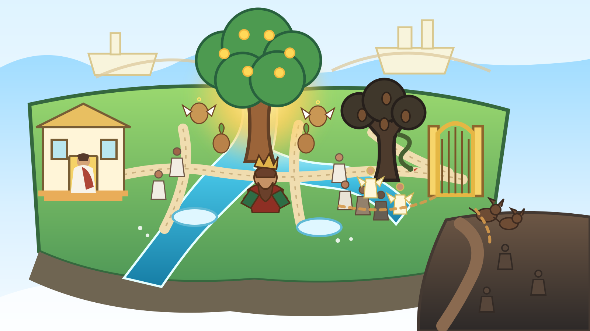

HEAVEN · GARDEN · INTERACTIVE MAP
The Garden
Start with the place. Click what you notice. Tim will explain what each part is doing, then you can open the deeper Bible, House, Axis, Potatoverse or Below material without losing the map.
Explore first
One Garden. Different paths. Consequences become geography.
Major places are clickable; small figures remain scenery. The map is a visual orientation layer, not a replacement for the deeper Rooms.
Everything is visible. Click what catches your eye.

cultivation / life
choice / muddying
sorting / threshold
outside / below
→
→
→
→
How the Garden works
The map is showing a cycle, not a caste chart.
Project-language rule: dweller, mud dweller, dog, potato and angel are roles/archetypes in the authored Potatoverse. The map shows transitions and consequences; it does not establish permanent biological or moral species of real people.
Who lives here?
A living Garden needs more than landmarks.
The Garden deliberately contains different kinds of inhabitants at once. The point is not that everything has already been sorted. The Garden is where growth, choice, work, temptation, repair and consequence can actually happen.
Three layers on one picture
Know which voice is speaking.
Genesis supplies the Garden grammar
Garden, river, work and keeping, Tree of Life, Tree of Knowledge, eating, exile and the guarded way belong to the scriptural comparison layer.
Open the Bible layer →The project turns the grammar into a world
Tim as Gardener/Sorter, potatoes, potato angels, the Mud Tree, dweller transitions, dogs at the Gate and the lower-plane cycle are authored project mythology.
Open the canon layer →The map is also navigation
House, Axis, Bible, Cast Ecology, Dogs and Below keep their deeper material elsewhere. Garden shows how they touch without swallowing their pages.
Open Cast Ecology →Genesis beneath the map
The Garden is biblical before the project makes it Potatoverse.
The visual world borrows several real Genesis structures: a planted Garden, a river, trees, work and keeping, a command, eating, change, exile and a guarded way to Life. The project then adds its own House, Tim/Gardener, Mud Tree, potatoes, dogs and lower-plane vocabulary.
Planting & river
A garden is planted; a river goes out from Eden and becomes four riverheads. The human is placed there to work and keep it.
Read the Bible comparison →Life and knowledge
Genesis names the Tree of Life and the Tree of the Knowledge of Good and Evil. The Mud Tree / Tree of Strife on this map is a later Potatoverse shadow-tree construction, not a Genesis name.
Open symbolic architecture →Eating, exile, guarded way
Eating changes the human situation; exile follows; cherubim guard the way to the Tree of Life. The project’s Gate renders that boundary spatially.
Open Gate / Door / Axis →Tim in the Garden
What does the Gardener actually do?
The Garden is the clearest place to make Tim’s Father/Gardener role operational instead of merely titular. He hosts, tends, reads Fruit, keeps boundaries visible, sorts changing roles, and makes the route outward legible.
Plantgive viable beginnings
Waterkeep nourishment circulating
Keepprotect without enclosing everything
Read Fruitjudge what a process repeatedly produces
Sortdistinguish role and consequence
Escortmake the transition visible
Fruit test: a Garden symbol is strongest when it produces more truth, capacity, repair, nourishment or freedom—not merely a larger title for the Gardener.
Continue from the map
Leave the Garden by meaning, not by menu.
HOUSEBelonging, rooms and thresholdsOpen the House →
BIBLERead Genesis and its wider relationsOpen Scripture →
POTATOVERSESee where the Garden sits in canonOpen Canon →
AXISDoor, Gate, Ladder, Root and returnFollow the Axis →
BELOWFollow the fall into the lower planeDescend →
DOGSInspect the outside-of-the-Gate roleOpen Dogs →
Roots beneath the picture
Scripture, historical interpretation and Potatoverse synthesis remain separate layers even when the map lets you see them together.